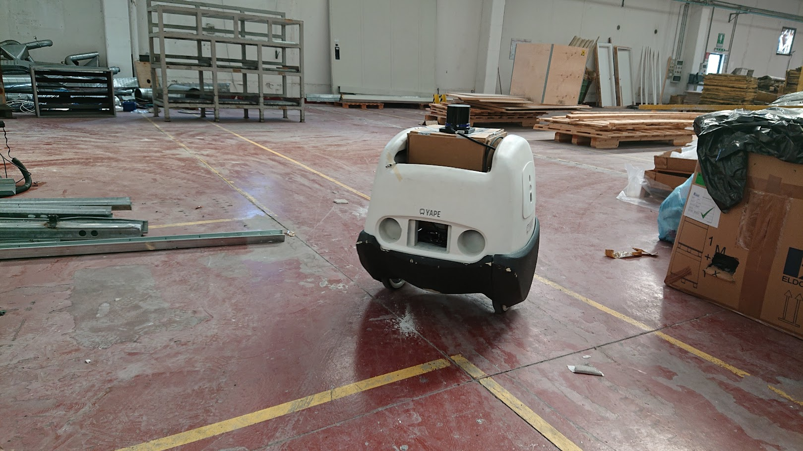
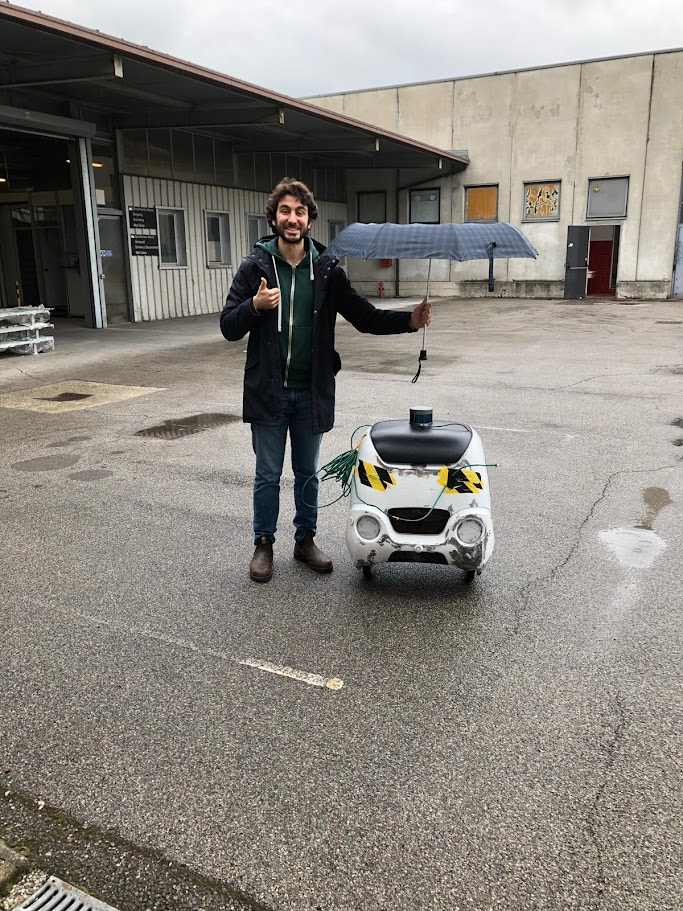
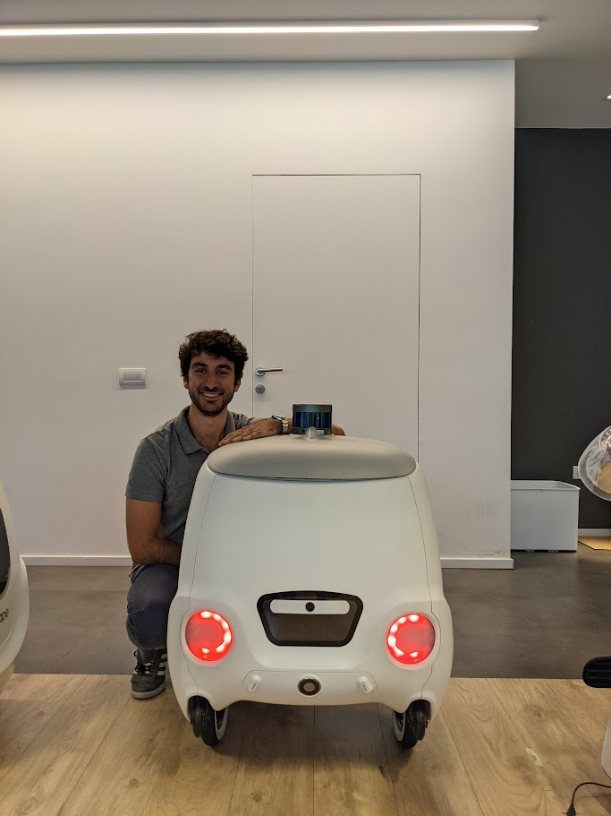
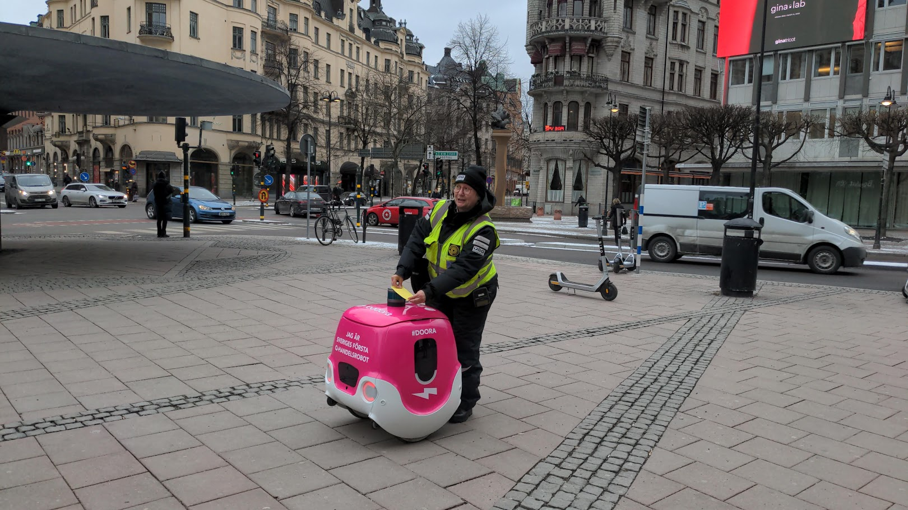
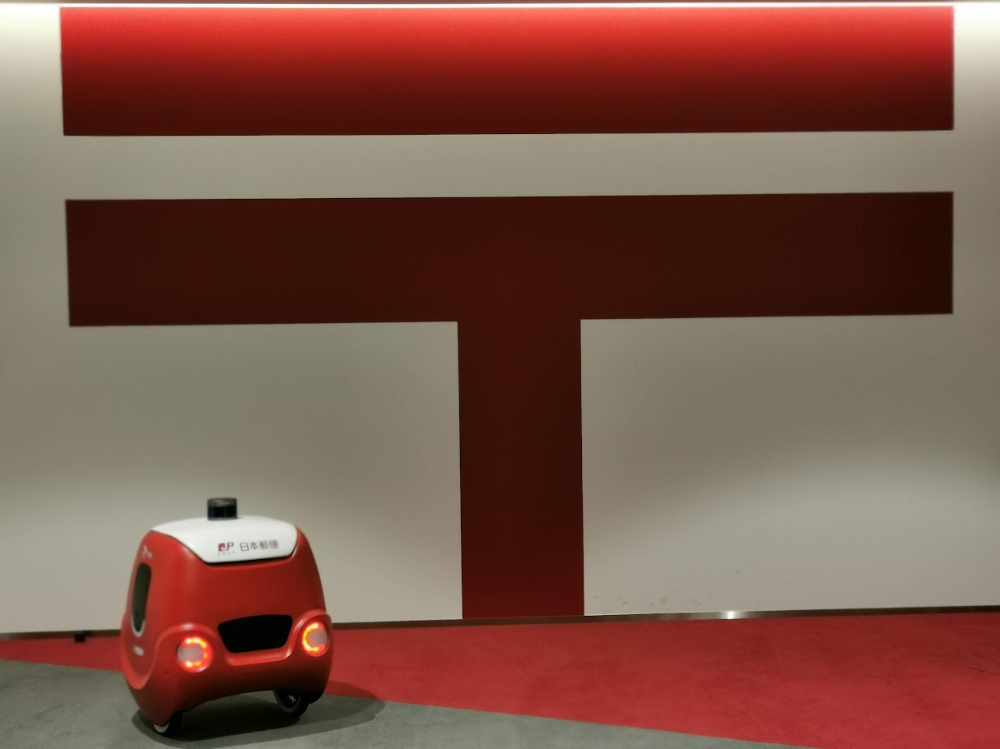
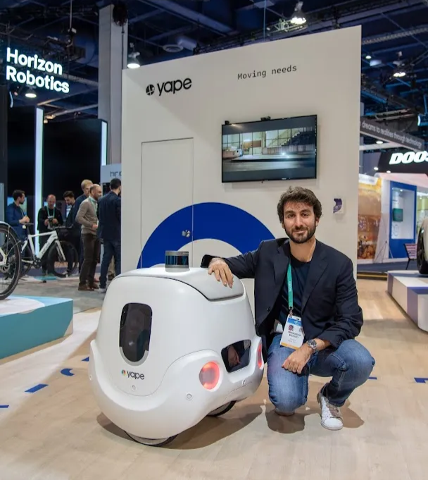

studied at Liceo Classico (a kind of high school in Italy that teaches a lot of Latin and Ancient Greek and not enough math and physics) and loved it. You can learn a lot about life by studying Latin literature (if you don't know where to start, start here)
did a bunch of interesting stuff during high school. Got selected for a national Latin translation competition, got kicked out in the first round, arriving last - my mother told me it's better to be the worst among the bests, than the best among the worsts. Got selected to fly to NYC for the National High School Model United Nation, had a lot of fun representing Switzerland but my resolution did not pass.
studied engineering because you can't make a living translating Latin. Can't say I am satisfied with what I learned, but had very good grades and graduated with a grade of 110/110 summa cum laude (with honors!!)
also spent some time at UC Berkeley building autonomous racing cars. This was my Master Thesis:
came back to Italy because I like living in Europe and was in love with my girlfriend who lived in Italy - she's now the mother of my son, and soon-to-be wife, so it was a good choice!
joined Yape as first employee. We were building autonomous robots with a very stupid two-wheeled design, but we managed to work with companies such as Japan Post, Walmart, PepsiCo, Foodora.
a few pics of our robots back then
v0





realized we had no idea how to build a startup, burned out during COVID, didn't know what to do, applied to MBAs (I've always been a diligent student) and got accepted into INSEAD
got a scholarship, went to INSEAD, graduated July 2022, and meanwhile started a company
with Presto Robotics we were trying to avoid doing the errors we committed at YAPE. We failed miserably
our pitch deck back then
despite not making it to commercial deployment, we had a few POCs going on, and we were even featured on Italian state television!
us on Italian TV - video recorded by my proud girlfriend
needed money to pay rent, so had to take a normal job. Joined Runa, and the rest is history!